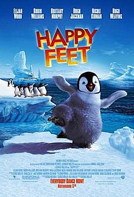
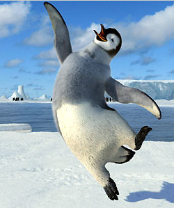

Modern Culture
Emperor penguins have been the subject of many recent cultural phenomenon, including movies, music, and art. In 2006, the movie "Happy Feet" was produced which featured emperor penguins, in particular, one that loves to dance. Although this movie was tailored towards younger audiences, it promoted the theme of helping to stop climate change to prevent species from becoming extinct. In addition, the movie provided a lot of correct factual information about emperor penguins, focusing on their life cycle.

